前言
很久之前在简书上写过几篇博客，内容就是搭建属于自己的CSGO服务器，点击这里可以进行考古。但是纯命令行的搭建方式有着以下几种缺点：
- 搭建步骤繁琐：全程直接使用命令行搭建服务器，对于不熟悉Linux环境的新手并不友好
- 插件切换繁琐：想要服务器能够快速地切换不同的插件（回防、Multi 1v1、跑图、KZ等），每次手动操作Addons文件夹中的插件极其令人烦躁
- 硬盘空间珍贵：同样是插件切换繁琐引起的问题，当时用的是阿里云最便宜的云服务器，只有40G的硬盘，只能存一份服务器游戏文件，没有足够的空间存多份服务器游戏文件然后多开
后来也尝试写了一个CSGO服务器一键安装脚本，但是效果也不好，不能从根本上解决快速切换插件的问题。最后经过了解并尝试使用Docker，终于解决了上述问题，服务器目前稳定使用了几个月，用起来非常愉快，是时候分享给有着同样需求的小伙伴了，Github仓库地址在这里，懂哥可以直接看仓库README开始搭建，萌新建议还是看这篇博客，有些细节和README并不相同（如：没有使用pwd命令等）。目前本容器有着以下几个特点：
- 一个容器关联一种插件：Docker可以创建不同的容器，将CSGO服务器的插件分别挂载到不同的容器中。通过容器的启动和停止，达到快速切换插件的目的
- 不影响服务器游戏文件：容器只向
csgo/cfg文件夹中添加插件的配置文件，不涉及到其他文件的改动，插件配置出问题后直接删除容器，重新创建即可 - （理论上）同时启动多个服务器：每个容器都是相对独立的运行环境，Mod从文件中加载后不会重新加载，也就是说启动一个容器后可以更换Mod去启动另一个容器，因此可以同时启动多个运行不同插件的服务器
实现思路
实现的核心思路主要是以下两点：挂载、软链接。如下图所示，服务器游戏文件、Steamcmd和Mod文件夹均挂载到容器中，容器在启动时将Mod文件夹中的addons文件夹链接到服务器游戏文件夹中的csgo/addons，相当于创建一个快捷方式，服务器在启动时就会从这个软连接跳转到对应的Mod文件夹中，去加载对应的插件，完成服务器的启动。
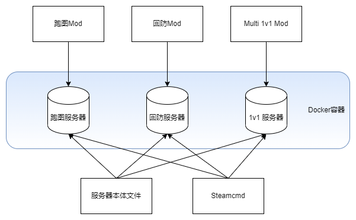
通过控制容器的启动和停止，我们能够快速地切换到不同功能的服务器，在高效地管理Mod的同时不影响到原本的游戏服务器文件。接下来的搭建教程分为简单的三步：Steamcmd和服务器的安装、Mod的下载解压和CFG文件夹链接、容器的启动。
准备阶段
在开始之前，首先需要做以下准备：
docker和docker-compose：可以通过官网的文档安装（不用docker-compose也可以直接使用命令行创建和启动容器，仓库中的README有对应命令）- 端口：每家的云服务器端口管理方案不同，需要开启27015端口的TCP和UDP，否则会出现服务器没有响应或无法连接等问题
- 系统：Ubuntu 20.04（其他发行版也可以，但是本人没有测试过）
- Steam服务器登录令牌：服务器登录Steam所需要的令牌，没有令牌的话，启动的服务器不会显示在服务器列表中，可以点击这里申请令牌（CSGO的APPID为740）
- Steam网页API：加载创意工坊地图需要使用的API密钥，可以点击这里注册一个
- 储备知识：默认小伙伴们会使用SSH连接服务器，并且懂得如何使用Vim、Linux基本命令，明白相对路径、绝对路径、用户权限的概念
安装Steamcmd和CSGO服务器
- 首先是拉取安装器镜像
1
sudo docker pull registry.cn-shenzhen.aliyuncs.com/fisheryung/docker-csgo:installer
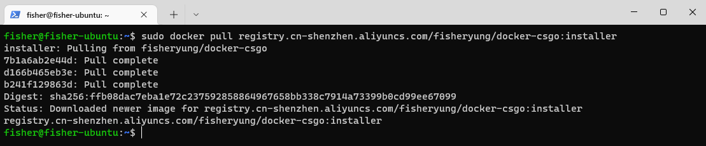
- 创建和启动安装器的容器
将Steamcmd和CSGO服务器的安装文件夹挂载到容器中，容器会自动将Steamcmd和CSGO服务器安装到挂载的文件夹中，同时将一些基本配置写入到服务器配置文件csgo/cfg/server.cfg中，写入的配置有以下几种：
STEAMACCOUNT: Steam服务器登录令牌，参见准备阶段的描述SERVER_HOSTNAME: CSGO服务器名称，该名称显示在服务器列表中RCON_PASSWORD: CSGO服务器远程控制台连接密码，默认为12345678SV_PASSWORD: CSGO服务器房间密码，默认为12345678
创建用于储存Steamcmd和CSGO服务器文件的挂载文件夹（文件夹路径和名称可以自定义，但需要记住路径）。个人习惯，本人喜欢把游戏相关的文件放到games文件夹中，由于我的用户名是fisher，所以我的steamcmd路径为/home/fisher/games/steamcmd，CSGO服务器路径为/home/fisher/games/csgo-server，这些路径都需要记住，等会挂载文件夹中需要用到。1
2
3
4cd ~
mkdir games && cd games
mkdir steamcmd
mkdir csgo-server
创建一个docker-compose配置文件，用于配置将要创建的安装器容器，我将这份配置文件命名为docker-csgo-installer.yaml，储存路径为home/fisher/games/docker-csgo-installer.yaml。配置项如下，需要注意的地方有两个。第一个要注意的地方是volumes，表示要挂载的文件夹，需要将上面刚刚创建的两个文件夹路径写到冒号的前面。第二个要注意的地方是environment，也就是上面所说的服务器配置，根据自己的情况修改。1
2
3
4
5
6
7
8
9
10
11
12
13
14
15# 文件名: docker-csgo-installer.yaml
# docker-csgo:installer 的示例配置文件
version: '3'
services:
csgo-installer:
container_name: csgo-installer
image: registry.cn-shenzhen.aliyuncs.com/fisheryung/docker-csgo:installer
volumes:
- /home/fisher/games/steamcmd:/steamcmd # 冒号前的挂载路径需要根据自己的配置改变，可以使用pwd命令查看当前路径
- /home/fisher/games/csgo-server:/csgo-server # 挂载路径配置同上
environment:
- STEAMACCOUNT=xxxxxxxxxx
- SERVER_HOSTNAME=CSGOSERVER
- RCON_PASSWORD=12345678
- SV_PASSWORD=12345678
使用docker-compose创建和启动容器（注意：仓库README中使用了-d参数，使容器在后台运行，在此不用-d参数的目的是让萌新能看到Steamcmd和CSGO服务器的安装进度），随后便能够看到安装进度，耐心等待容器运行结束并自动退出即可。1
sudo docker-compose -f docker-csgo-installer.yaml up
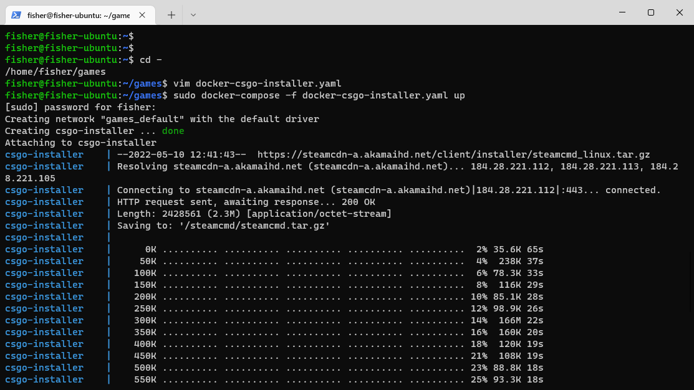
注意：服务器在下载过程中可能会跑满带宽，导致SSH连接卡住不动或者直接断开连接，不用担心，容器还是在后台运行中的，耐心等待就可以了。
如果有跟我一样断开SSH连接的小伙伴，可以重新连接并使用sudo docker ps -a命令查看所有容器状态，如下图所示，STATUS为UP表示容器正在运行中。可以使用命令sudo docker logs csgo-installer --tail=50查看容器最新的日志，下图中可以看到下载的进度。
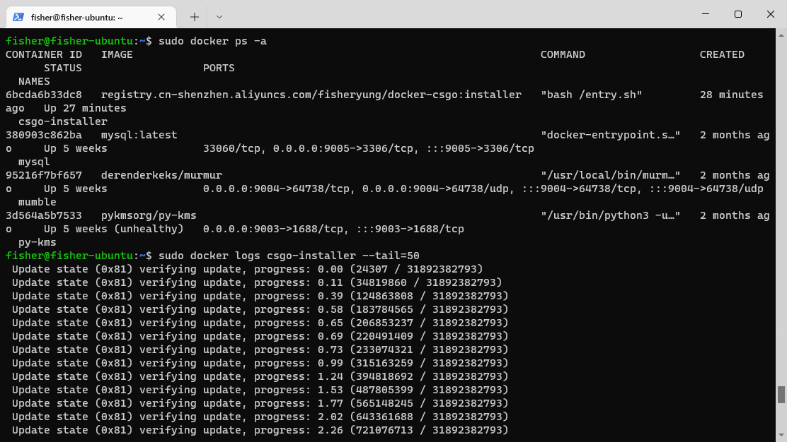
创建和启动无Mod的CSGO服务器
如果需要创建和启动有Mod的CSGO服务器，直接跳到下一节。
- 首先是拉取无Mod的CSGO服务器容器镜像
1
sudo docker pull registry.cn-shenzhen.aliyuncs.com/fisheryung/docker-csgo:origin
- 创建和启动无Mod的CSGO服务器
同样将Steamcmd和CSGO服务器文件夹挂载到容器中，同时需要自定义一些启动参数，目前支持的参数有以下几种：
PORT: 服务器端口，默认为27015，本样例中没有设置该参数(懂的可自行修改，同时需要设置容器的端口映射)TICKRATE: 服务器的Tickrate，可以设置为64或128，默认为128GAMETYPE: 游戏类型和游戏模式设置(休闲、竞技、死斗)，默认为0，想要启动其他模式可以参考这里GAMEMODE: 游戏类型和游戏模式设置(休闲、竞技、死斗)，默认为0，想要启动其他模式可以参考这里MAPGROUP: 游戏地图组设置，默认为mg_activeMAP: 游戏地图设置，默认为de_dust2
创建docker-compose配置文件，用于配置将要启动的CSGO服务器，我将这份配置文件命名为docker-origin.yaml，储存路径为/home/fisher/games/docker-origin.yaml。volumes的配置与上面的安装器配置文件一致，environment是服务器的启动参数，可以根据自己的需要进行修改。1
2
3
4
5
6
7
8
9
10
11
12
13
14
15
16
17
18# 文件名: docker-origin.yaml
# docker-csgo:origin 的示例配置文件
version: '3'
services:
csgo-origin:
container_name: csgo-origin
restart: always
image: registry.cn-shenzhen.aliyuncs.com/fisheryung/docker-csgo:origin
network_mode: host # 需要多开的伙伴可以指定端口映射
volumes:
- /home/fisher/games/steamcmd:/steamcmd # 冒号前的挂载路径需要根据自己的配置改变，可以使用pwd命令查看当前路径
- /home/fisher/games/csgo-server:/csgo-server # 同上
environment:
- TICKRATE=128
- GAMETYPE=0
- GAMEMODE=0
- MAPGROUP=mg_active
- MAP=de_mirage
使用docker-compose创建和启动容器，此时容器将在后台启动。关于如何连接服务器、更新服务器和停止服务器，跳转到最后一节。1
sudo docker-compose -f docker-origin.yaml up -d
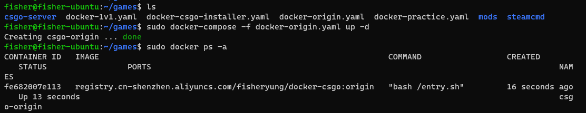
创建和启动有Mod的CSGO服务器
在此以Multi-1v1插件为例子，同时使用到了插件和创意工坊地图，在使用创意工坊地图之前，首先要去获取一个Steam网页API密钥，详细参见准备阶段。
- 首先是拉取有Mod的CSGO服务器容器镜像
1
sudo docker pull registry.cn-shenzhen.aliyuncs.com/fisheryung/docker-csgo:mods
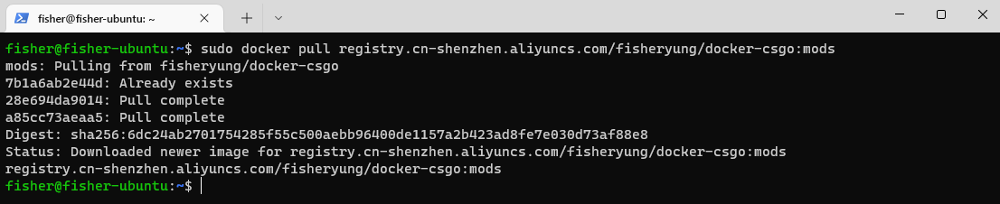
创建插件文件夹，下载所需要的插件
需要的插件有：mmsource，sourcemod，multi-1v1。注意，该操作依旧是在/home/fisher/games文件夹中，小伙伴们需要注意自己的当前的路径，做出相应的修改。注意，有些小伙伴下载速度可能会很慢，可能需要配合上网技巧。同时，有些插件的压缩包格式为zip，需要注意这些后缀。1
2
3
4
5mkdir mods && cd mods
mkdir 1v1 && cd 1v1
wget --no-check-certificate -O mmsource.tar.gz https://mms.alliedmods.net/mmsdrop/1.11/mmsource-1.11.0-git1145-linux.tar.gz
wget --no-check-certificate -O sourcemod.tar.gz https://sm.alliedmods.net/smdrop/1.10/sourcemod-1.10.0-git6537-linux.tar.gz
wget --no-check-certificate -O plugin.zip https://github.com/splewis/csgo-multi-1v1/releases/download/1.1.10/multi1v1_1.1.10.zip链接CSGO服务器的CFG文件夹
注意：这是关键一步。
在解压刚刚下载的所有插件之前，我们需要先将服务器中的CFG文件夹链接到插件文件夹中，保证随后解压的插件配置文件都解压到服务器的CFG文件夹中。注意链接的路径需要根据自己的情况修改，链接之后在1v1文件夹中可以看到一个cfg的软链接，该软链接指向CSGO服务器文件夹中的CFG文件夹，表示操作成功。1
ln -s /home/fisher/games/csgo-server/csgo/cfg/ /home/fisher/games/mods/1v1/cfg
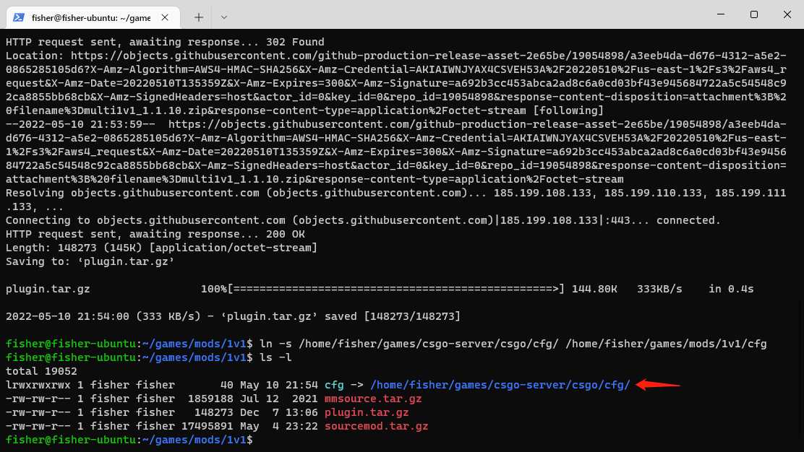
- 解压插件
注意此时的工作路径应为：/home/fisher/games/mods/1v1，有些插件压缩包格式为zip，需要使用unzip解压。解压后的Mod文件夹结构如下图所示，插件的CFG配置文件均解压到CSGO服务器文件夹中。1
2
3tar zxkf mmsource.tar.gz
tar zxkf sourcemod.tar.gz
unzip -o plugin.zip
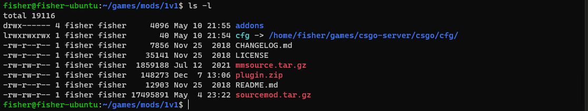
- 创建和启动有Mod的CSGO服务器
与无Mod的CSGO服务器镜像不同，有Mod的CSGO服务器镜像有部分不同的意义的参数：
MAPGROUP: 创意工坊地图合集，管理游戏结束后投票下一张地图的菜单，想用官方地图组可以直接改为mg_active或其他MAP: 创意工坊地图ID，想用官方图可以直接改为de_dust2或其他AUTHKEY: Steam网页API密钥，使用创意工坊地图时要用，如果只需要启动官方地图，则设置为NONE即可
返回到路径/home/fisher/games。创建docker-compose配置文件，用于配置将要启动的CSGO服务器，我将这份配置文件命名为docker-1v1.yaml，储存路径为/home/fisher/games/docker-1v1.yaml。volumes的配置除了挂载Steamcmd和CSGO服务器文件夹外，还需要挂载Mod文件夹，environment是服务器的启动参数，可以根据自己的需要进行修改。1
2
3
4
5
6
7
8
9
10
11
12
13
14
15
16
17
18
19
20# 文件名: docker-1v1.yaml
# docker-csgo:mods 的示例配置文件
version: '3'
services:
csgo-1v1:
container_name: csgo-1v1
restart: always
image: registry.cn-shenzhen.aliyuncs.com/fisheryung/docker-csgo:mods
network_mode: host
volumes:
- /home/fisher/steamcmd:/steamcmd # 冒号前的挂载路径需要根据自己的配置改变，可以使用pwd命令查看当前路径
- /home/fisher/csgo-server:/csgo-server # 同上
- /home/fisher/1v1:/mod # 注意这里把要启动的插件对应的文件夹挂载上
environment:
- TICKRATE=128
- GAMETYPE=0
- GAMEMODE=0
- MAPGROUP=279177557
- MAP=279708083
- AUTHKEY=xxxxxxxxxx
使用docker-compose创建和启动容器，此时容器将在后台启动。1
sudo docker-compose -f docker-1v1.yaml up -d
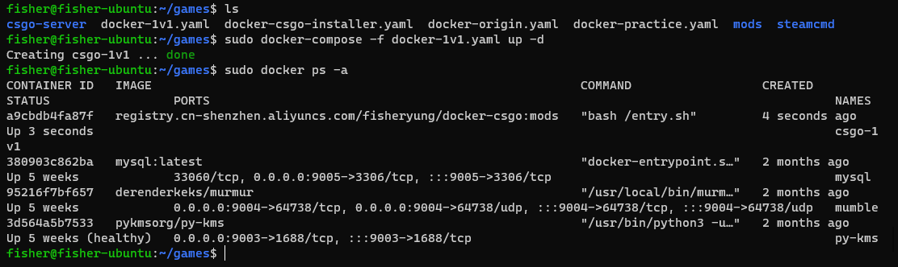
连接、启动、停止、切换服务器
- 连接服务器
我建议小伙伴们将服务器添加到自己的收藏夹中，方便每次连接，并且这种方法不区分国服或国际服。
打开Steam，点击左上角的查看，点击服务器，将会弹出一个服务器列表窗口，点击窗口中的收藏夹，点击右下角的添加服务器。
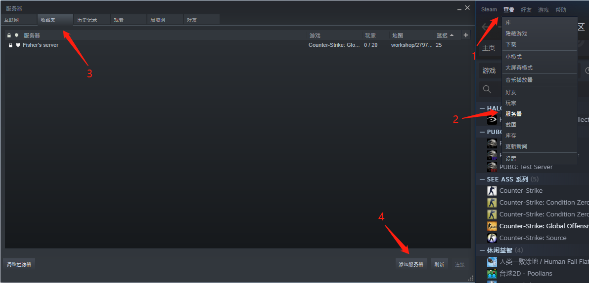
将自己的服务器IP地址填入或者将自己的域名填入，点击在此地址上寻找游戏，如果你的服务器端口不是默认的27015，则需要加上端口号再寻找游戏，点击将选定的游戏服务器添加至收藏夹，就能在收藏夹中收藏自己的服务器了，双击服务器连接，输入服务器密码就能进入服务器了。
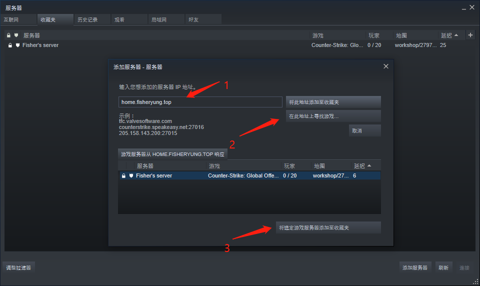
- 启动、停止、切换服务器
使用Docker启动、停止、切换服务器非常简单。首先使用命令sudo docker ps -a查看目前启动了哪一个服务器，如下图所示，我启动的是带有1v1插件的单挑服务器。切换到储存有docker-compose配置文件的文件夹，我的文件夹路径是/home/fisher/games，然后使用命令sudo docker-compose -f docker-1v1.yaml down停止容器，容器停止后会自动移除，再次使用sudo docker ps -a查看就看不到csgo-1v1的容器存在了。
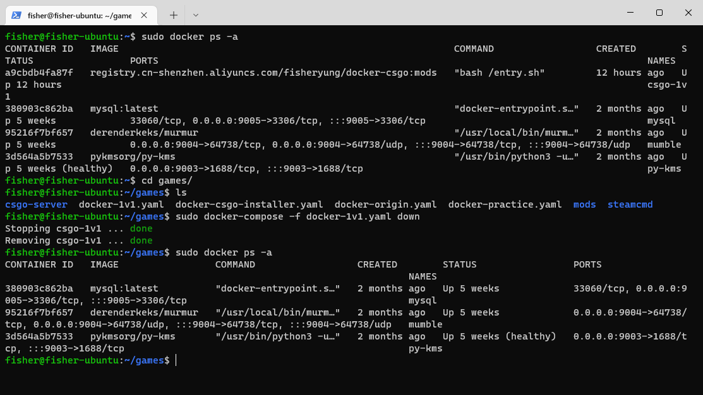
然后启动服务器的方法和上面一样，我这里启动的是原版无Mod的服务器，命令为sudo docker-compose -f docker-origin.yaml up -d。服务器列表中会暂时显示服务器无响应，等一阵子服务器启动好之后，就能连接进入了。
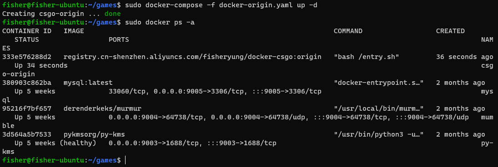
FAQ
如何判断
docker-csgo:installer正确完成了安装？
查看steamcmd和csgo-server文件夹中是否有文件，如果有文件且安装器容器已经停止，可以认为正确完成了安装。查看安装过程中容器的日志可以使用命令sudo docker logs csgo-installer --tail=50如何更改服务器的名称、密码、RCON密码等其他配置？
可以编辑server.cfg文件，容器只配置了部分启动参数，更多的参数可以通过这个文件配置，以我的配置，文件路径为:/home/fisher/games/csgo-server/csgo/cfg/server.cfg使用创意工坊地图后，服务器启动速度很慢？
使用创意工坊地图和创意工坊地图合集后，服务器启动时需要下载这些地图，这需要看服务器所在的地区，某些地区需要使用特殊方式才能下载成功服务器空闲一段时间后，重新连接很慢？
服务器中没有玩家后，一段时间后会挂起，此时客户端重新连接，服务器需要重新启动一次，耐心等待即可连接服务器后马上回弹到主界面，控制台显示
server is running on an older version？
服务器运行的还是旧版CSGO，重新启动容器就能自动更新了。命令行重启:sudo docker restart csgo-origin，docker-compose重启:sudo docker-compose -f docker-csgo-origin.yaml restart -d可以同时启动多个容器吗？
理论上，使用不同的端口是可以同时启动多个容器的，但可能存在一个Steam Account(固定在server.cfg中，并没有使用参数化启动的配置)只能启动一个服务器的限制。由于本仓库的初衷是一份服务器游戏文件+多份Mod的快捷切换和管理，因此本人没有尝试过同时启动多个容器，有兴趣的朋友可以试一下